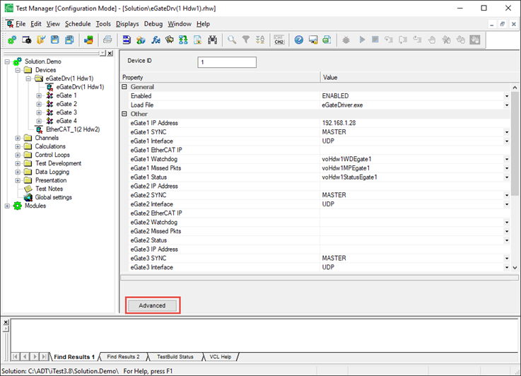
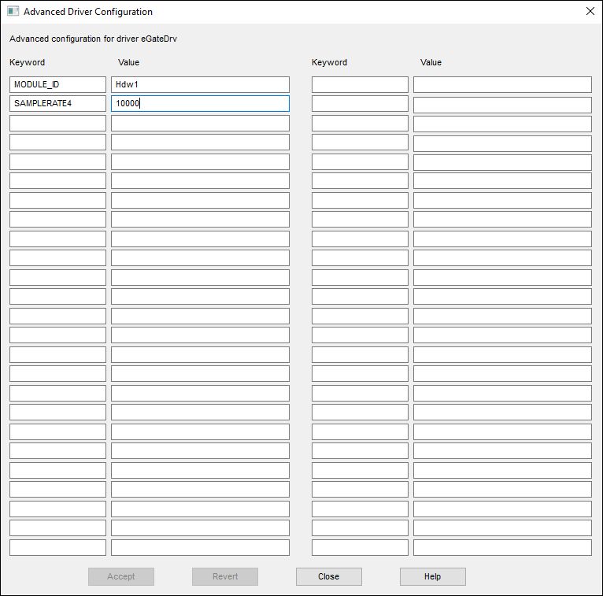
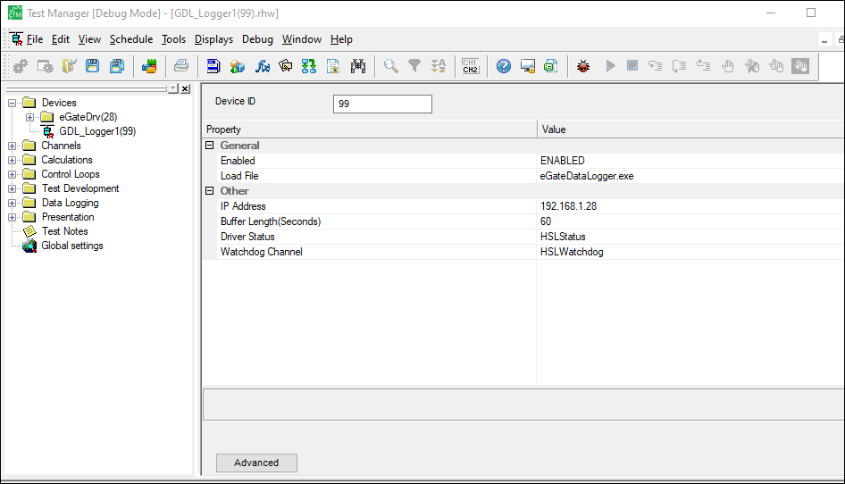
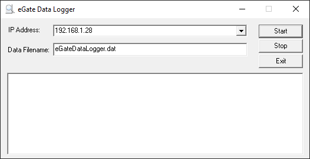
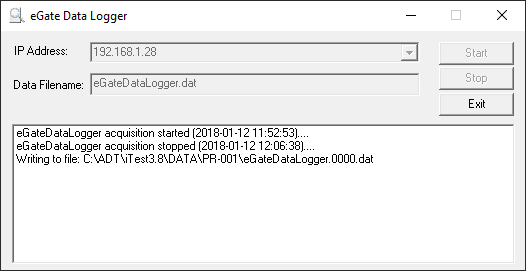

iTest User's Guide
The High-Speed Data Logger is a software executable designed to retrieve and format data that is buffered on A&D Technology's iConnect Q.pac and Q.station controllers. This tool performs high-speed data logging with current speeds of 20 kHz for Q.station controllers and 10 kHz for Q.pac controllers.
Log duration, sample rate, and channel count are dependent on the controller and I/O module type.
The maximum log duration (in seconds) is determined by the following equation:
Maximum Log Duration (sec) = 5*10 ^8^ /(Sample Rate* ((Total Channel Count + 8)*4))
In this example, the sample rate is 20 kHz and there are 16 configured channels.
5*10 8 /(20,000 * ((16 + 8)*4) ≈ 260 seconds
 |
NOTE: | The maximum log duration will produce multiple log files. |
Channel Maximum
| Q.pac | Q.station | |||
| Sample Rate (kHz) | Max Channels* | Max Chan/Bus | Max Channels | Max Chan/Bus |
| 5kHz | 38 | 38 | 254 | 81 |
| 10kHz | 18 | 18 | 157 | 40 |
| 20kHz | - | - | 64 | 18 |
Module I/O Type Sample Rates*
| Sample Rate (kHz) | A101 | A107 | A108 | A123 | A124 | D101 |
| 5kHz | ||||||
| 10kHz | ||||||
| 20kHz |
Channel values will have iTest calibration coefficients applied if applicable.
Typically, the Gantner TestCommander tool is used to configure the hardware for use with the High Speed Data Logger. However, if the iTest eGate driver will be acquiring data from the same controller simultaneously, the driver will perform the hardware configuration. Setting the desired sample rate for the High-Speed Data Logger is performed in Test Manager with the eGate driver configuration editor. To set the sample rate, open Test Manager and the eGate driver's .tdaddin. Click the Advanced button to open the Advanced Driver Configuration dialog.
Advanced Button

Advanced Configuration Dialog

In the Advanced Driver Configuration dialog, enter the keyword value pair for the system rate (i.e., SAMPLERATE=10000; samplerate = 10KHz).
See the eGate Driver documentation for more information ($SYSTEMDIR\Help\Drivers\EGate).
The High-Speed Data Logger is configured in iTest similar to a remote driver. Two remote driver selections have been added named GDL_Logger1 and GDL_Logger2.
Driver Configuration

Driver Settings
| Setting | Description |
| IP address | IP address of the controller to gather high-speed data from. |
| Buffer Length (Seconds) | Specifies the size of the buffer to hold past data. |
| Watchdog Channel | The watchdog is set to zero while retrieving data from the controller. |
| Driver Status | A channel that is initially set to zero. It is set to 1 when idle, 2 when logging. |
The High-Speed Data Logger is a standalone executable. You can launch the application in many ways, including:
Depending on how you launch or configure the application, you can manually or automatically control the High-Speed Data Logger. HSDL channels are calibrated using the normal iTest calibration procedure.
When you launch the High-Speed Data Logger, you can use the interface to manually control data logging. When using this method, time stamps in the outputted file are taken from the controller.
High-Speed Data Logger Interface

To use the interface, enter the IP address of the controller that the buffer will read data from and the name of the data file to log the data to. By default, these fields are auto-populated with configurations from the active support folder. To start capturing data, click Start. Click Stop to stop capturing data and start writing the data to the log. The text field in the dialog will update to display the status of the High-Speed Data Logger.
Data Writing to File

You can control the location of the outputted file using the DRHoldForReviewDir powertek.ini setting.
You can use mailslot messages in VCL code to control the High-Speed Data Logger from iTest. When using this method, the driver updates the controller to use the clock time on iTest before it starts capturing data.
Syntax:
\\.\mailslot\GDL_Logger1|2
The following commands are supported:
High-Speed Data Logger Mailslot Commands
| Command | Purpose | Example |
STARTLOG Logfilename LogOrderList %<CLOCK_TIME_EPOCH>% |
Starts data capture to the specified file. The channels logged are specified by the LogOrderList. If LogOrderList is omitted, all channels are logged. See the Using the Interface section for how the destination folder is determined. | STARTLOG HSData.dat HSData.lol %<CLOCK_TIME_EPOCH>% |
STOPLOG %<CLOCK_TIME_EPOCH>% |
Stops capturing data | STOPLOG %<CLOCK_TIME_EPOCH>% |
DIE |
Closes the High-Speed Data Logger | DIE |
SYNCCLOCK |
Sets the real-time clock on the iConnect controller to the iTest clock time. | SYNCCLOCK |
RESTART |
Empties the current buffers and restarts collecting data. | RESTART |
The system channel voSyseGateLoggerStatus is used to monitor the status of the data logger. The data logger sets the channel value to 1 (or IDLE) when running but not logging data, and 2 (BUSY) when running and logging data.
High-speed data is captured directly from the controller, which means that time stamps do not necessarily lineup to the data logged by iTest. An independent event, like a channel, must be used to align the data.
The following VCL code demonstrates how to run a high-speed data log and iTest data log simultaneously:
+0.0 MESSAGE "\\.\mailslot\GDL_Logger1>>STARTLOG HSLOGGEDDATA.dat %<CLOCK_TIME_EPOCH>%"
+0.0 MESSAGE "\\.\mailslot\GDL_Logger1>>STARTLOG HSLOGGEDDATA.dat hsdl.lol %<CLOCK_TIME_EPOCH>%"
+0.0 STARTLOG iTestLog +0.0 PAUSE 10 ! Collecting data during this time
+0.0 STOPLOG iTestLog
+0.0 MESSAGE "\\.\mailslot\GDL_Logger1>>STOPLOG %<CLOCK_TIME_EPOCH>%"
#while (voSyseGateLoggerStatus = 2) !Test for busy
PAUSE 1.0
#endwhile
General information and errors are logged to egatedatalogger.log. This file can be found in the active solution's log folder (i.e., $SUPPORTDIR\Logs).